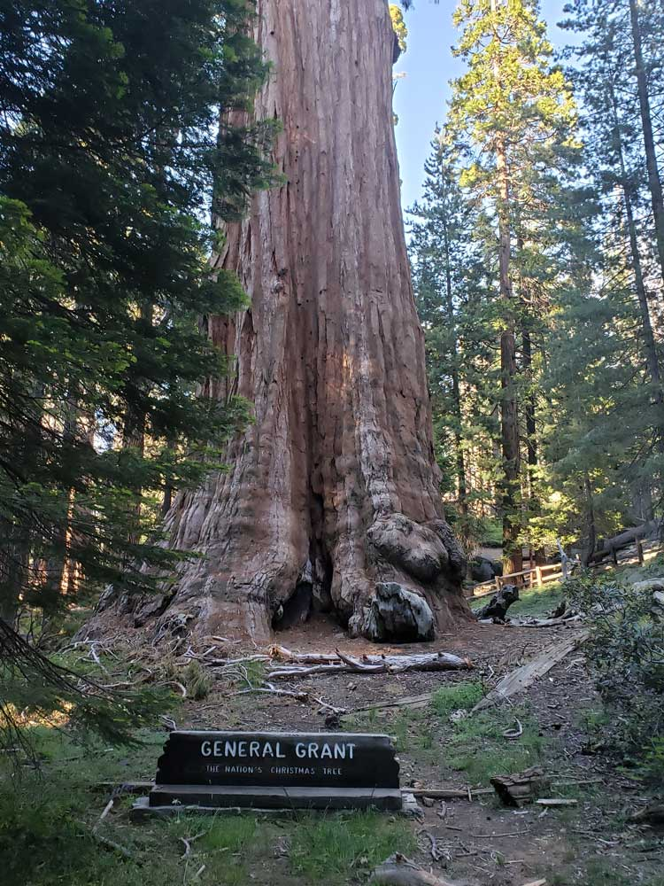
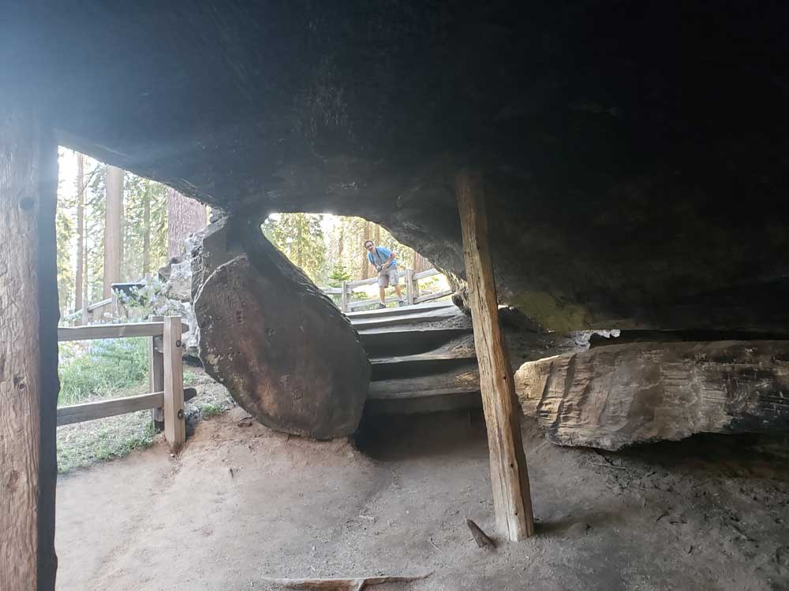
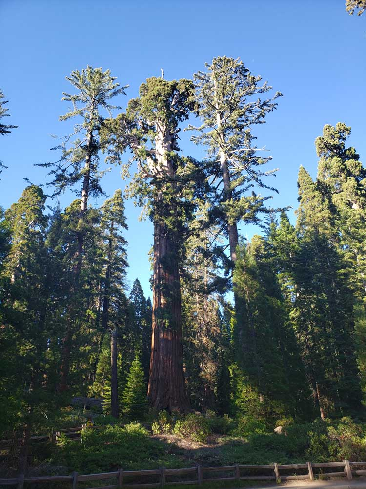
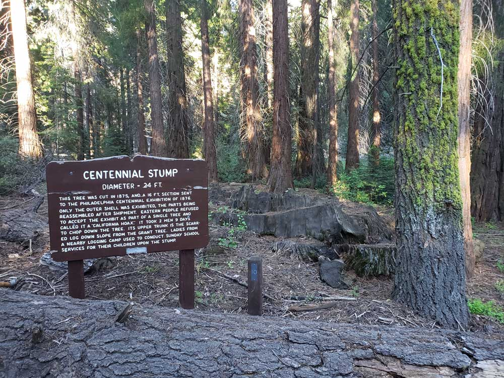
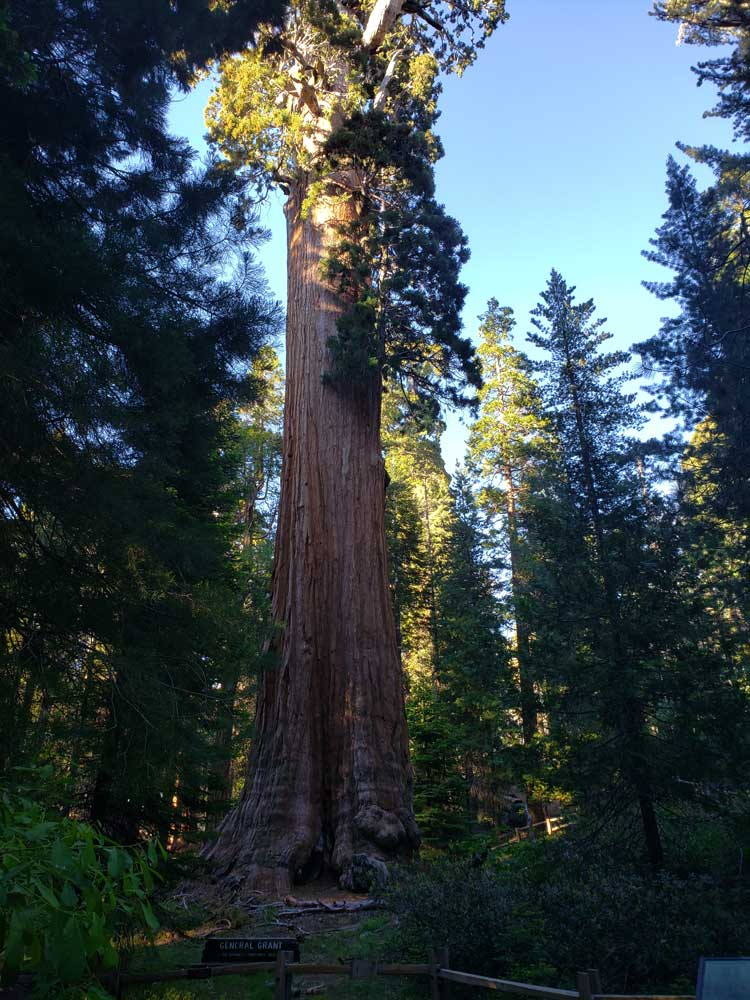

Grove of giant sequoia trees including its most well-known tree, the General Grant Tree, which is 267 feet tall and the second largest known tree in the world.
General Information
- Pet Policy:
- Leashed pets allowed in campgrounds, picnic areas and on roads. Pets not allowed on trails
- Fees:
- Private Vehicle: $35 (valid for 7 days in Sequoia and Kings Canyon National Parks)
- Closest Cities with Hotels:
- Fresno, 55 miles
- Seasons:
- Grant Grove is open all year, though subject to heavy winter snowfall
Highway 180 beyond Grant Grove to Cedar Grove is typically open late April to mid-November - Location:
- Grant Grove, Kings Canyon National Park, CA
- Website:
- nps.gov/seki/index.htm
How to Get There
From Fresno (55 mi): Drive east on CA-180 (Kings Canyon Road) through the Sierra foothills to the Big Stump Entrance of Kings Canyon National Park, then continue about 3 miles to Grant Grove Village and the Kings Canyon Visitor Center.
Overview
Grant Grove is the western gateway to Kings Canyon National Park, a forested area at about 6,600 feet just inside the Big Stump Entrance that includes the General Grant Grove of giant sequoias, Grant Grove Village and the park’s main visitor center. The grove’s centerpiece is the General Grant Tree, the second-largest tree in the world by volume, standing about 267 feet tall with a base circumference of about 107 feet. President Calvin Coolidge proclaimed it the “Nation’s Christmas Tree” in 1926, and in 1956 it was declared a National Shrine, the only living memorial to Americans who died in war.
Visitors come to Grant Grove to walk among ancient giant sequoias, explore the area’s history and use it as a base for exploring both Kings Canyon and neighboring Sequoia National Park. The grove was first protected by Congress in 1890 as General Grant National Park, just days after Sequoia National Park was created, making it the third-oldest national park in the country before it was absorbed into the new Kings Canyon National Park in 1940. The historic Gamlin Cabin, built in 1872, still stands in the grove, and nearby sequoia stumps and logging sites tell the story of the giant trees that were cut before the area was protected.
Sightseeing and Scenic Drives
Most sightseeing in Grant Grove is centered around the General Grant Tree area, about a mile from Grant Grove Village, where a short paved loop passes the General Grant Tree, the Robert E. Lee Tree, the hollow Fallen Monarch, which once served as a shelter, hotel and stable, and the Gamlin Cabin. Near the park entrance, the Big Stump area preserves enormous stumps from the logging era, including the Mark Twain Stump. A narrow, winding road from the village leads about 2.3 miles to Panoramic Point, where a short paved walk reaches a viewpoint over Kings Canyon and the High Sierra peaks. From Grant Grove, the Kings Canyon Scenic Byway (Highway 180) descends into the depths of Kings Canyon to Cedar Grove, and the Generals Highway leads south to Sequoia National Park’s Giant Forest, passing the Kings Canyon Overlook and the Redwood Mountain Overlook along the way.
Hiking
Grant Grove offers easy to moderate hikes, many through sequoia groves. The most popular is the paved General Grant Tree Trail, about a third of a mile, which is wheelchair accessible. Other easy to moderate options include the Big Stump Trail, a 2-mile loop through a logged grove near the entrance, the North Grove Loop, a quiet 1.5-mile loop through mixed conifer and sequoia forest, and the short walk at Panoramic Point. Longer hikes include the Sunset Trail to Ella Falls, about 6 miles round trip, the Park Ridge Trail to a fire lookout with sweeping views, and the hike up Buena Vista Peak along the Generals Highway. Nearby, the trails of Redwood Canyon explore Redwood Mountain Grove, the largest giant sequoia grove in the world.
Other Activities
Beyond hiking and sightseeing, Grant Grove offers ranger-led walks and evening programs in summer, horseback rides from the nearby Grant Grove stables when operating, and stargazing on clear nights. Just outside the park in Giant Sequoia National Monument and Sequoia National Forest, Hume Lake offers swimming, fishing, paddling and boat rentals, and the Converse Basin Grove is home to the Boole Tree, one of the largest sequoias in the world. In winter, Grant Grove becomes a hub for snowshoeing, cross-country skiing and snow play, and each December the “Trek to the Tree” ceremony at the General Grant Tree celebrates the Nation’s Christmas Tree.
Getting to Grant Grove
Grant Grove is located in the western part of Kings Canyon National Park, about 55 miles (roughly 1 to 1.5 hours) east of Fresno on Highway 180. Most visitors arrive from Fresno via Highway 180 through the Big Stump Entrance, or from Sequoia National Park via the Generals Highway, about 30 miles (roughly an hour) from Giant Forest and 2 to 2.5 hours from the Ash Mountain Entrance near Three Rivers. Fresno Yosemite International Airport is the closest major airport. Highway 180 to Grant Grove is open year-round, though tire chains may be required during winter storms.
Seasons
Grant Grove is open year-round. Summer brings warm days and cool nights, with full services, ranger programs and access to nearby areas such as Cedar Grove, Panoramic Point and Hume Lake. Spring and fall are quieter, with mild weather and fewer visitors, and fall brings golden dogwoods and black oaks. Winter often brings heavy snow, transforming the sequoia groves into a quiet winter landscape; Highway 180 beyond Grant Grove into Kings Canyon closes from about mid-November to late April, and the road to Panoramic Point closes to vehicles, though both are popular for snowshoeing and skiing. The Generals Highway between Grant Grove and Sequoia National Park may close temporarily during storms.
Camping and Lodging
Grant Grove Village offers in-park lodging at the John Muir Lodge and the Grant Grove Cabins, ranging from rustic tent cabins to cabins with private baths, along with a restaurant, market and gift shop. Nearby campgrounds include Azalea Campground, open year-round, and the seasonal Sunset and Crystal Springs Campgrounds. Just outside the park, Sequoia National Forest and Giant Sequoia National Monument offer additional campgrounds, such as Princess and those around Hume Lake, as well as private lodges along the Generals Highway like Montecito Sequoia Lodge. Wuksachi Lodge in Sequoia National Park is about an hour south. The largest selection of hotels and services is in Fresno, about 1 to 1.5 hours west, with smaller options in Squaw Valley and Dunlap along Highway 180.
Visitor Centers
The Kings Canyon Visitor Center in Grant Grove Village is the main visitor center for Kings Canyon National Park, offering exhibits on giant sequoias, the canyon and the park’s history, a short film, a bookstore, wilderness permits and ranger information. It is open year-round, with reduced hours in winter. In summer, the Cedar Grove Visitor Center, at the end of the Kings Canyon Scenic Byway, offers information for exploring the canyon, and the Lodgepole and Giant Forest Museum visitor centers serve visitors in Sequoia National Park.
Top Trails
General Grant Tree Trail
Length: Approximately 0.3 miles loop
Elevation Gain: Minimal
Difficulty: Easy
A paved loop to the General Grant Tree, the nation's Christmas tree, and the Fallen Monarch.
North Grove Loop Trail
Length: 1.5 miles loop
Elevation Gain: 150 feet
Difficulty: Easy
A quieter loop through sequoias, sugar pines and dogwoods beyond the General Grant Tree. See the North Grove Loop Trail page for full details.
Big Stump Trail
Length: 2 miles loop
Elevation Gain: 200 feet
Difficulty: Easy
This loop near the park entrance passes the huge stumps left by 1880s logging, including the Mark Twain Stump. See the Big Stump Trail page for full details.
Panoramic Point Trail
Length: Approximately 0.5 miles round trip
Elevation Gain: Approximately 100 feet
Difficulty: Easy
A short paved walk to a viewpoint over Hume Lake and the peaks of the Sierra Nevada.
This article uses material from the Wikipedia articles "General Grant Grove" and "General Grant Tree", which are released under the Creative Commons Attribution-Share-Alike License 3.0, and information from the National Park Service "Sequoia and Kings Canyon National Parks" website.




